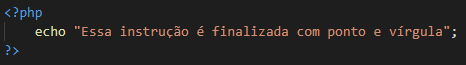
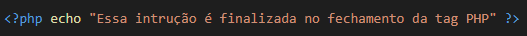
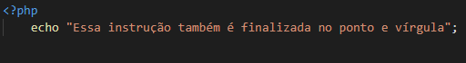
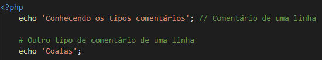
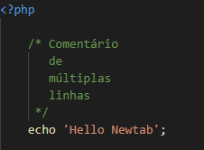

Ao interpretar um arquivo, o PHP procurará pelas tags de abertura , que indicarão ao interpretador quando ele deverá começar e finalizar de ler o código. Dessa forma conseguimos utilizar o php em diversos tipos de arquivos, já que tudo que estiver fora das tags será ignorado pelo interpretador do PHP.
Em arquivos PHP puro, com a extensão .php, a documentação recomenda que não utilize a tag de fechamento para que não tenha linhas ou espaços em branco após a tag, fazendo com que seu script tenha um efeito indesejável.
Nosso código é formado por diversas instruções (também conhecidas como comandos) e precisamos informar ao interpretador a hora de finalizar uma instrução. O PHP necessita que os comandos sejam finalizados com o caractere ; (ponto e vírgula).
Alguns exemplos:



No mundo da programação, seguimos algumas regrinhas consideradas boas práticas na escrita do código. Isso porque no mercado de trabalho, dificilmente desenvolvemos algo sozinhos. Utilizado para documentar o código, os comentários devem ser aplicados com cautela para que não cause efeito contrário. Comentar comandos inutilizados e explicações óbvias podem prejudicar a leitura do código por outros profissionais. Vejamos os tipos de comentários nos exemplos abaixo:
Comentários de uma linha podem ser feitos após o fim da instrução ou ocupando a própria linha, com o caracteres // ou #.
Para comentários com múltiplas linhas, devemos indicar o início com /* e o final */
